NTT DATA TECHのフィード
https://zenn.dev/p/nttdata_tech
NTT DATA公式アカウントです。 技術を愛するNTT DATAの技術者が、気軽に楽しく発信していきます。 当社のサービスなどについてのお問い合わせは、 お問い合わせフォーム https://nttdata.com/jp/ja/contact-us/ へお願いします。
フィード
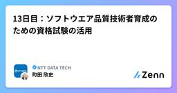
13日目：ソフトウエア品質技術者育成のための資格試験の活用
NTT DATA TECHのフィード
はじめにこのAdvent Calendarでは、過去に私が書いたテストや品質に関する記事の紹介をします。本日紹介する記事はこちらです。https://www.nttdata.com/jp/ja/trends/data-insight/2015/120301掲載日：2015年12月3日掲載メディア：DATA INSIGHT（NTT DATA） 生成AIによる要約この記事では、ソフトウェア品質やテスト技術のスキルを可視化・保証する手段として、「資格試験」の活用を提案しています。具体例として、国際資格であるJSTQB（ISTQBと相互認証）による「ソフトウェアテスト資格」...
12時間前
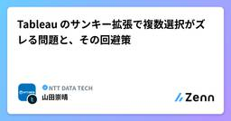
Tableau のサンキー拡張で複数選択がズレる問題と、その回避策
NTT DATA TECHのフィード
1. はじめにTableau でサンキー・ダイアグラムを使ってフィルタリングを行おうとしたところ、「複数選択が期待どおりに動かない」 という現象に遭遇しました。2024.2 以降の Tableau では拡張機能からサンキーを簡単に追加できますが、使用する拡張機能の種類によっては ビュー間で選択内容が一致しない ケースがあることが分かりました。この記事では以下の観点で現象を整理します。やりたかったことどの操作でどんな現象が起きたか別拡張との挙動の違いどの拡張をどの場面で使うのが良いか サンキー・ダイアグラムとは？サンキー・ダイアグラム（Sankey Dia...
2日前
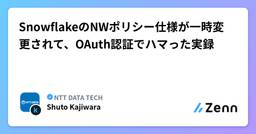
SnowflakeのNWポリシー仕様が一時変更されて、OAuth認証でハマった実録
NTT DATA TECHのフィード
はじめにSnowflakeのNWポリシー挙動が一時的に変更されたことにより、OAuth認証の接続テストで問題が発生しました。Snowflakeサポートの協力を得て解決できたため、ここでは発生経緯・変更内容・現時点の接続条件を整理して共有します。背景：Snowflakeの「2025_06 バンドル BCR-2094」において、OAuth認証時のネットワークポリシー（NWポリシー）の適用ルールが一時的に変更されました。この変更はロールバックされ、現在は延期扱いとなっています（2025年12月12日時点）。この記事は、NTTデータ Snowflakeアドベントカレンダーの10日...
2日前
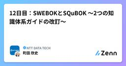
12日目：SWEBOKとSQuBOK®～2つの知識体系ガイドの改訂～
NTT DATA TECHのフィード
はじめにこのAdvent Calendarでは、過去に私が書いたテストや品質に関する記事の紹介をします。本日紹介する記事はこちらです。https://www.nttdata.com/jp/ja/trends/data-insight/2014/122501掲載日：2014年12月25日掲載メディア：DATA INSIGHT（NTT DATA） 生成AIによる要約この記事では、ソフトウェア開発に関する知識体系（BOK＝Body of Knowledge）のうち、ソフトウェアエンジニアリング全般を扱うSWEBOKと、ソフトウェアの品質に関する知識を体系化したSQuBOK...
2日前
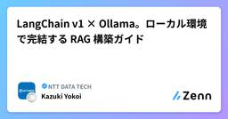
LangChain v1 × Ollama。ローカル環境で完結する RAG 構築ガイド
NTT DATA TECHのフィード
こんにちは、MEKIKI X AIハッカソンもくもく勉強会の12日目を担当するYokoiです！普段はモダナイゼーション案件で生成AIの活用支援をしています。プライベートではドライブとサウナにハマっています。今日は、ローカル環境で完結するRAG構築について書いてみました。2025年10月22日、ついに LangChain v1 がリリースされました。 API 設計やエージェント機能が大きく進化しましたが、ネット上にはまだ v0 系の情報が多く、最新仕様で実装しようとすると意外とつまずきがちです。そこで本記事では、LangChain v1 と Ollama を使い、Windows ラ...
2日前
GPT-5.1を使ってみた
NTT DATA TECHのフィード
はじめにこんにちは！MEKIKI X AIハッカソンもぐもぐ勉強会 Advent Calendar 2025の11日目を担当する株式会社NTTデータグループ 技術革新統括本部 AI技術部の大木と申します。先日、2025年11月13日にOpenAIの最新モデルであるGPT-5.1がAPIで公開されました。生成AIを利用している顧客からは生成AIが指示通りに動くこと（指示への従属性）が求められており、この観点での改善が見られるかを具体的なタスクを通じて確認していきたいと思います。本記事では、医療用語抽出タスクを題材に、GPT-5.1と従来モデル（GPT-5）を比較し、精度（F1...
2日前
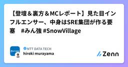
【登壇＆裏方＆MCレポート】見た目インフルエンサー、中身はSRE集団が作る要塞 #みん強 #SnowVillage
NTT DATA TECHのフィード
この記事は、「 Snowflakers Advent Calendar 第11日目 」です。2025年11月28日にSnowVillage＆みん強コラボ企画として、「ここがヘンだよ！？ Snowflake 〜 みんなが考えた最強のデータ基盤には、なんでSnowflakeが多いのか？」が開催されました。こちらのイベントで「見た目インフルエンサー、中身はSRE集団が作る要塞 〜SnowflakeのSLA真面目すぎ問題〜」というタイトルで登壇をしてきました。司会やイベントの企画・運営もやらせていただき、とにかく楽しんだのでレポートさせてもらいます。以下、当日のYouTube配信です（冒...
3日前
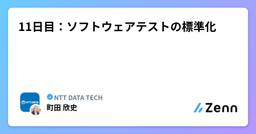
11日目：ソフトウェアテストの標準化
NTT DATA TECHのフィード
はじめにこのAdvent Calendarでは、過去に私が書いたテストや品質に関する記事の紹介をします。本日紹介する記事はこちらです。https://www.nttdata.com/jp/ja/trends/data-insight/2014/013001掲載日：2014年1月30日掲載メディア：DATA INSIGHT（NTT DATA） 生成AIによる要約この記事では、ソフトウェア開発における品質と生産性向上のため、テスト工程の「標準化」の重要性を説いています。特に、従来はプロジェクトや組織ごとにばらつきがあったテスト手順や成果物を、共通の枠組みで統一することで...
3日前
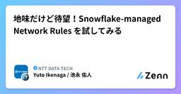
地味だけど待望！Snowflake-managed Network Rules を試してみる
NTT DATA TECHのフィード
1. はじめに2025年、Snowflake がまた一つ地味だけど待望のアップデートを出してきました。それが Snowflake-managed network rules です。見た目はかなり地味なんですが、Snowflake を日々触っている身としては「あ、これは助かるやつだ…！」 と心の中でガッツポーズした機能でもあります。Snowflake を外部 SaaS と組み合わせて使うとき、IP アドレスの許可設定がとにかく面倒。なのに重要！ という場面がずっとありました。そこで登場したのが managed network rules。一言で言えば、外部 SaaS...
3日前
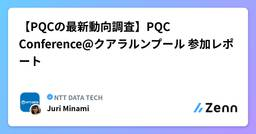
【PQCの最新動向調査】PQC Conference@クアラルンプール 参加レポート
NTT DATA TECHのフィード
この記事は「ビギナーズ Advent Calendar 2025」の11日目です。 はじめにこんにちは！株式会社NTTデータグループで耐量子計算機暗号(Post-Quantum Cryptography, PQC)関連の業務に携わっている南です。2025年10月28日から30日の3日間、マレーシアのクアラルンプールで開催されたPost-Quantum Cryptography (PQC) Conferenceに参加してきたため、今回はその参加レポートをお届けします。 想定読者PQCの最新動向に関心がある方PQC移行に関して各国や他企業の取り組みに興味のある方...
3日前
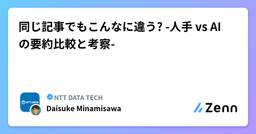
同じ記事でもこんなに違う? -人手 vs AI の要約比較と考察-
NTT DATA TECHのフィード
この記事は「ビギナーズ Advent Calendar 2025」の11日目の記事です。 はじめに生成AIの進化により、記事の要約や情報整理をAIに任せる機会が増えてきました。しかしその一方で、「人が読んでまとめた内容と比べてどのような差が生まれるのか」といった疑問を、私自身感じるようになりました。そこで本記事では、同じ記事を「人手」と「AI」でそれぞれ要約し、その特徴や違いを分析することにしました。AIを活用する際の判断材料として、本記事の内容を参考にしていただければ幸いです。 実施内容本記事では、1つの記事を対象に人手とAIで要約を作成し、それらを「内容比較」と「アン...
3日前
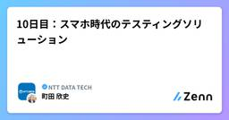
10日目：スマホ時代のテスティングソリューション
NTT DATA TECHのフィード
はじめにこのAdvent Calendarでは、過去に私が書いたテストや品質に関する記事の紹介をします。本日紹介する記事はこちらです。https://www.nttdata.com/jp/ja/trends/data-insight/2013/060601掲載日：2013年6月6日掲載メディア：DATA INSIGHT（NTT DATA） 生成AIによる要約この記事では、スマートフォン（スマホ）アプリの普及に伴い、テストにおける「実機の多様性」と「膨大なテスト対象機種」の問題が深刻化している現状を指摘。すべての機種を自前で揃えて検証するのはコスト・管理ともに非現実的...
4日前
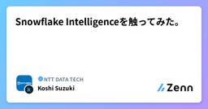
Snowflake Intelligenceを触ってみた。
NTT DATA TECHのフィード
はじめにはじめまして。株式会社NTTデータグループ 技術革新統括本部 AI技術部の鈴木皓士と申します。2025年11月4日に、Snowflake IntelligenceがGA（一般公開）となりました。本記事では、このSnowflake Intelligenceを実際に触ってみた内容をご紹介します。Snowflake Intelligenceを触るにあたり、Cortex Analyst、Cortex Search、Cortex Agentsを構築します。これらの機能に関心のある方にもぜひ読んでいただければと思います。https://docs.snowflake.com/en...
4日前
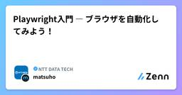
Playwright入門 ― ブラウザを自動化してみよう！
NTT DATA TECHのフィード
はじめにはじめまして！NTT DATAに所属している松帆です。日々さまざまな業務に取り組む中で、特にブラウザ（Microsoft Edge）を使った作業に触れる機会が多く、「手作業で繰り返すブラウザ操作を自動化できたら便利なのでは？」と思うことがありました。そこで、Edgeを自動で操作できるツールを探していて出会ったのが Playwright（プレイライト） です。Microsoft が開発しているオープンソースの自動化ツールで、ブラウザをプログラムから操作できます。試しに使ってみたら、想像以上に直感的で使いやすかったです👍この記事では、「Playwrightってそもそも...
4日前
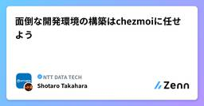
面倒な開発環境の構築はchezmoiに任せよう
NTT DATA TECHのフィード
この記事は「ビギナーズ Advent Calendar 2025」の10日目の記事です。 はじめに本記事の執筆には、誤字脱字チェックや表現の調整のみに生成AIを活用しています．また筆者の心の声を以下のようにトグルで記載しています．心の声せっかく心を込めて執筆した記事でも上記のような注意書きをしないと疑わなければいけない世の中，ﾁｮｯﾄﾂﾗｲ TL;DR以下の状況を前提としたうえで，chezmoi（公式DOC）を利用して開発端末のセットアップ速度向上を目指します．流動性の高いプロジェクトでソフトウェア開発をするメンバーの開発能力がそこまで担保されていないメンバー...
4日前
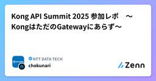
Kong API Summit 2025 参加レポ 〜KongはただのGatewayにあらず〜
NTT DATA TECHのフィード
はじめにこんにちは。MEKIKI X AIハッカソンもぐもぐ勉強会 Advent Calendar 2025の10日目を担当する堀田です。APIマネジメントプラットフォームを提供するKongが主催するイベント「API Summit 2025」（NY開催）、「Kong API Summit Japan 2025」（東京開催）に参加してきました。※私の所属チームはKongのユーザーでありパートナー企業ですので、最新情報キャッチのために行ってきました。Kongは、Amazon API Gateway、Azure API Management、Apigee、MuleSoft等のA...
4日前
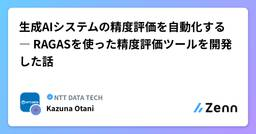
生成AIシステムの精度評価を自動化する ― RAGASを使った精度評価ツールを開発した話
NTT DATA TECHのフィード
この記事は「ビギナーズ Advent Calendar 2025」の9日目の記事です。 はじめにNTTデータグループ 技術革新統括本部の大谷です。私たちのチームでは、RFP（Request for Proposal）に対する非機能要件の抜け漏れチェックを生成AIで自動化する取り組みを進めています。昨年度トピックス発信も行っているので、ぜひ見てもらえると嬉しいです！https://www.nttdata.com/global/ja/news/topics/2024/121300/現在は、さらに精度を向上させるべくプロンプトや仕組みの改善を続けていますが、精度の評価に非常に時間が...
5日前
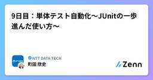
9日目：単体テスト自動化～JUnitの一歩進んだ使い方～
NTT DATA TECHのフィード
はじめにこのAdvent Calendarでは、過去に私が書いたテストや品質に関する記事の紹介をします。本日紹介する記事はこちらです。https://www.nttdata.com/jp/ja/trends/data-insight/2012/083001掲載日：2012年8月30日掲載メディア：DATA INSIGHT（NTT DATA） 生成AIによる要約この記事では、Javaの単体テスト自動化の現状と課題、およびその改善へ向けた取り組みを紹介しています。調査では多くのプロジェクトで単体テストツールの利用率が約 27.7％にとどまっており、JUnitなどxUni...
5日前
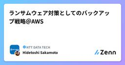
ランサムウェア対策としてのバックアップ戦略＠AWS 177
177
NTT DATA TECHのフィード
この記事はJapan AWS Top Engineers Advent Calendar 2025のDay9 の記事です。https://qiita.com/advent-calendar/2025/aws-top-engineers 対象読者Amazon Web Services（AWS）でバックアップ戦略を検討している方ランサムウェア対策としてのバックアップ設計を検討している方AWS Backupの論理的エアギャップボールト（Logically Air-Gapped Vault）に興味がある方マルチアカウント構成でのバックアップ管理を検討している方...
5日前
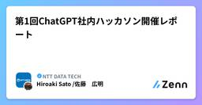
第1回ChatGPT社内ハッカソン開催レポート
NTT DATA TECHのフィード
はじめにこんにちは、MEKIKI X AIハッカソンもぐもぐ勉強会 Advent Calendar 2025の8日目を担当する株式会社NTTデータグループ 技術革新統括本部 AI技術部の佐藤と申します。2025年11月17日に、ChatGPTの社内活用を推進する取り組みの一環として、第1回ChatGPTハッカソンを豊洲センタービル（本社ビル）で開催しました！テーマは「ChatGPTを活用した業務効率化・生産性向上」 と題しまして、当日は、各部門から計11チームが参加し、参加チームの皆さまには、カスタムGPTやプロジェクト機能などを活用した成果物を開発し、プレゼンとデモを通...
5日前